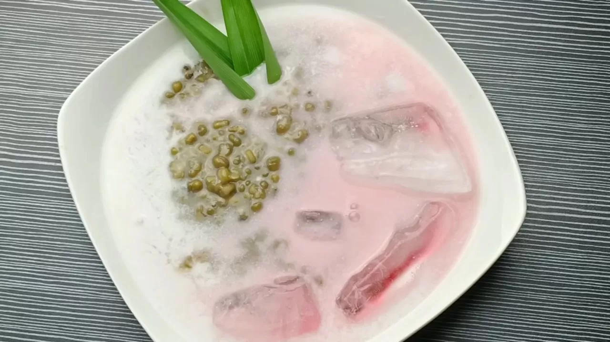

Minuman tradisional Indonesia yang menyegarkan dan bergizi tinggi.
Es bubur kacang hijau adalah hidangan manis yang terbuat dari kacang hijau rebus, santan, dan gula merah. Biasanya disajikan dengan tambahan es batu untuk memberikan sensasi segar.
TTL: Tegal, 14 Juli 2008
Hobi: Bersepeda
TTL: Tegal, 4 Maret 2008
Hobi: Runing
TTL: Tegal, 31 Januari 2008
Hobi: Bersepeda
TTL: Tegal, 8 September 2008
Hobi: Volly, Membaca
1.Awal Mula Bubur Kacang Hijau Sebelum dikenal sebagai minuman dingin, kacang hijau diolah menjadi bubur kacang hijau panas. Bubur ini dibuat dengan cara merebus kacang hijau hingga empuk, lalu dicampur dengan gula merah dan santan. Hidangan ini sudah dikenal sejak masa kerajaan-kerajaan Nusantara, terutama di wilayah Jawa dan Sumatera, di mana masyarakat sering menyajikan bubur manis saat acara tertentu seperti selamatan, hajatan, atau buka puasa. Bubur kacang hijau dianggap sebagai makanan yang menenangkan dan menyehatkan, cocok untuk anak-anak maupun orang tua.
2.Masuknya Es ke Indonesia Perubahan besar terjadi pada awal abad ke-20, saat es batu mulai dikenal di Indonesia. Pada masa kolonial Belanda, teknologi pembuatan es dibawa ke kota-kota besar seperti Batavia (Jakarta), Surabaya, dan Medan. Awalnya, es hanya bisa dinikmati oleh kalangan bangsawan dan orang Belanda, tetapi lama-kelamaan mulai digunakan oleh masyarakat umum. Dari sinilah muncul berbagai kreasi minuman dingin khas Indonesia — salah satunya adalah “Es Bubur Kacang Hijau.”
3. Makna dan Nilai Budaya Es bubur kacang hijau bukan hanya makanan biasa, tetapi juga bagian dari identitas kuliner Indonesia. Hidangan ini menggambarkan kreativitas masyarakat dalam memadukan tradisi lama dan pengaruh modern. Kacang hijau yang sederhana diolah menjadi makanan bergizi tinggi dan cocok untuk segala usia. Selain itu, bubur kacang hijau juga sering menjadi simbol kehangatan, kebersamaan, dan kesederhanaan dalam keluarga.
Berikut foto-foto kegiatan kelompok saat membuat es bubur kacang hijau:
Tempat pembuatan Es Bubur Kacang Hijau oleh kelompok kami dapat dikunjungi di lokasi berikut: